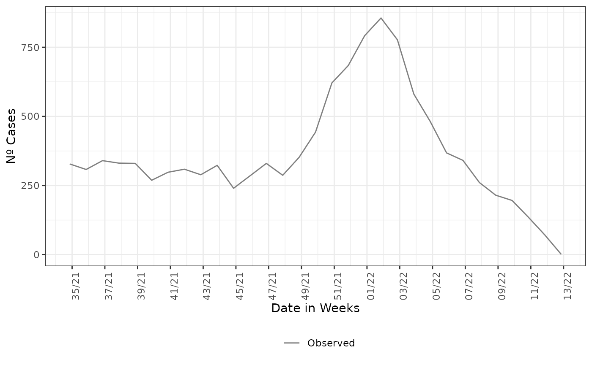
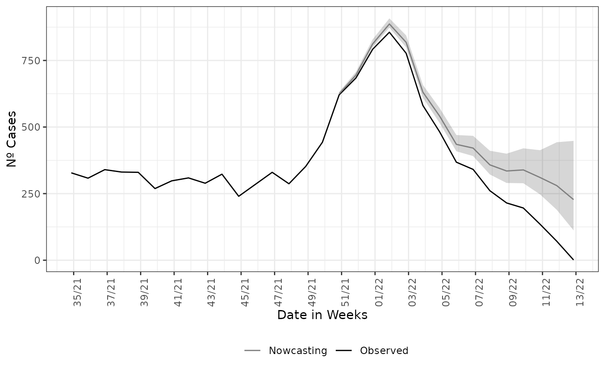

First example
When the package is loaded it provides a Lazy Data file,
sragBH, it is an anonymized records of Severe Acute
Respiratory Illness notified in the city of Belo Horizonte, since March
2020 to April 2022. To load it basically write:
And we take a look on the data:
head(sragBH)#> DT_SIN_PRI DT_DIGITA CLASSI_FIN EVOLUCAO CO_MUN_RES Idade fx_etaria
#> 1 2020-02-11 2020-03-05 4 1 310620 59 50 - 59
#> 2 2020-01-21 2020-02-06 4 1 310620 79 70 - 79
#> 3 2020-03-30 2020-04-17 4 1 310620 72 70 - 79
#> 4 2020-03-26 2020-04-02 4 1 310620 82 80 +
#> 5 2020-03-20 2020-04-13 4 1 310620 50 50 - 59
#> 6 2020-04-07 2020-04-22 5 1 310620 74 70 - 79It is a data.frame with 7 variables and 65,404 observations. We will make use of only the first two columns, “DT_SIN_PRI” (date of onset symptoms) and “DT_DIGITA” (recording date) as well the column “Idade” (age in years) to make age structured nowcasting.
The call of the function is straightforward, it simply needs a data
set as input, here the LazyData loaded in the namespace of
the package. The function has 3 mandatory parameters,
dataset for the parsing of the data set to be nowcasted,
date_onset for parsing the column name which is the date of
onset of symptoms and date_report which parses the column
name for the date of report of the cases. Here this columns are
“DT_SIN_PRI” and “DT_DIGITA”, respectively.
Nowcasting estimate
Use the tabs to see the same analysis with
nowcasting_inla() (INLA) or with
nowcasting_mgcv() (mgcv). Choosing a tab switches all the
tabs on the page.
nowcasting_bh_no_age <- nowcasting_inla(dataset = sragBH,
date_onset = "DT_SIN_PRI",
date_report = "DT_DIGITA",
data.by.week = T)
head(nowcasting_bh_no_age$total)#> # A tibble: 6 × 7
#> Time dt_event Median LI LS LIb LSb
#> <int> <date> <dbl> <dbl> <dbl> <dbl> <dbl>
#> 1 17 2021-12-19 625 621 632 623 627
#> 2 18 2021-12-26 695 687 707. 692 699
#> 3 19 2022-01-02 812 800 829. 807 817
#> 4 20 2022-01-09 887 873 908 881 893
#> 5 21 2022-01-16 818 799 844. 811 827
#> 6 22 2022-01-23 631 610 658. 623 639.
nowcasting_bh_no_age_mgcv <- nowcasting_mgcv(dataset = sragBH,
date_onset = "DT_SIN_PRI",
date_report = "DT_DIGITA",
data.by.week = T)
head(nowcasting_bh_no_age_mgcv$total)#> # A tibble: 6 × 7
#> Time dt_event Median LI LS LIb LSb
#> <int> <date> <dbl> <dbl> <dbl> <dbl> <dbl>
#> 1 17 2021-12-19 625 621 633 623 627
#> 2 18 2021-12-26 695 687 708 691 698
#> 3 19 2022-01-02 812 801 829 807 817
#> 4 20 2022-01-09 888 872 909 881 894
#> 5 21 2022-01-16 818 798 844 810 826
#> 6 22 2022-01-23 630 608 659 622 639The observed epidemic curve
This calling will return for the first element, total,
the nowcasting estimate (Median) and its intervals at two
levels: LIb and LSb are the lower and upper
limits of the 50% interval, and LI and LS are
the lower and upper limits of the 95% interval. For
nowcasting_inla() these are posterior credible
intervals.
On the second element, data, it returns the data to be
grouped and summarized to give the epidemic curve, we can take a look on
this element.
library(ggplot2)
library(dplyr)
dados_by_week <- nowcasting_bh_no_age$data |>
dplyr::group_by(dt_event) |>
dplyr::reframe(
observed = sum(Y, na.rm = T)
) |>
dplyr::filter(dt_event >= max(dt_event)-270)
dados_by_week |>
ggplot()+
geom_line(data = dados_by_week,
aes(dt_event,
y = observed,
col = 'Observed'))+
theme_bw()+
theme(legend.position = "bottom",
axis.text.x = element_text(angle = 90)) +
scale_color_manual(values = c('grey50', 'black'),
name = '')+
scale_x_date(date_breaks = '2 weeks',
date_labels = '%V/%y',
name = 'Date in Weeks')+
labs(x = '',
y = 'Nº Cases')
library(ggplot2)
library(dplyr)
dados_by_week_mgcv <- nowcasting_bh_no_age_mgcv$data |>
dplyr::group_by(dt_event) |>
dplyr::reframe(
observed = sum(Y, na.rm = T)
) |>
dplyr::filter(dt_event >= max(dt_event)-270)
dados_by_week_mgcv |>
ggplot()+
geom_line(data = dados_by_week_mgcv,
aes(dt_event,
y = observed,
col = 'Observed'))+
theme_bw()+
theme(legend.position = "bottom",
axis.text.x = element_text(angle = 90)) +
scale_color_manual(values = c('grey50', 'black'),
name = '')+
scale_x_date(date_breaks = '2 weeks',
date_labels = '%V/%y',
name = 'Date in Weeks')+
labs(x = '',
y = 'Nº Cases')
Nowcasting and the observed curve
After this element is grouped and summarized by the onset of symptoms
date, here DT_SIN_PRI, it is the epidemiological curve
observed. To illustrate how the estimate compares with the observed
curve, we plot the estimate and the epidemiological curve all
together.
nowcasting_bh_no_age$total |>
ggplot(aes(x = dt_event, y = Median,
col = 'Nowcasting')) +
geom_line(data = dados_by_week,
aes(y = observed,
col = 'Observed'))+
geom_ribbon(aes(ymin = LI, ymax = LS), colour = NA,
alpha = 0.2,
show.legend = F)+
geom_line()+
theme_bw()+
theme(legend.position = "bottom",
axis.text.x = element_text(angle = 90)) +
scale_color_manual(values = c('grey50', 'black'),
name = '')+
scale_x_date(date_breaks = '2 weeks',
date_labels = '%V/%y',
name = 'Date in Weeks')+
labs(x = '',
y = 'Nº Cases')
nowcasting_bh_no_age_mgcv$total |>
ggplot(aes(x = dt_event, y = Median,
col = 'Nowcasting')) +
geom_line(data = dados_by_week_mgcv,
aes(y = observed,
col = 'Observed'))+
geom_ribbon(aes(ymin = LI, ymax = LS), colour = NA,
alpha = 0.2,
show.legend = F)+
geom_line()+
theme_bw()+
theme(legend.position = "bottom",
axis.text.x = element_text(angle = 90)) +
scale_color_manual(values = c('grey50', 'black'),
name = '')+
scale_x_date(date_breaks = '2 weeks',
date_labels = '%V/%y',
name = 'Date in Weeks')+
labs(x = '',
y = 'Nº Cases')Next steps
This is an example where the estimate was done without considering any type of structure in data, which is the first assumption for the nowcasting. For further details on each of the nowcasting models behind each function, see the articles Nowcasting with INLA and Nowcasting with mgcv.